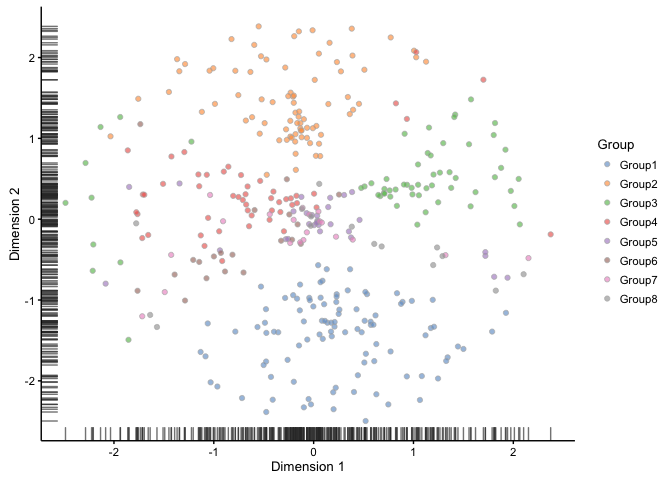
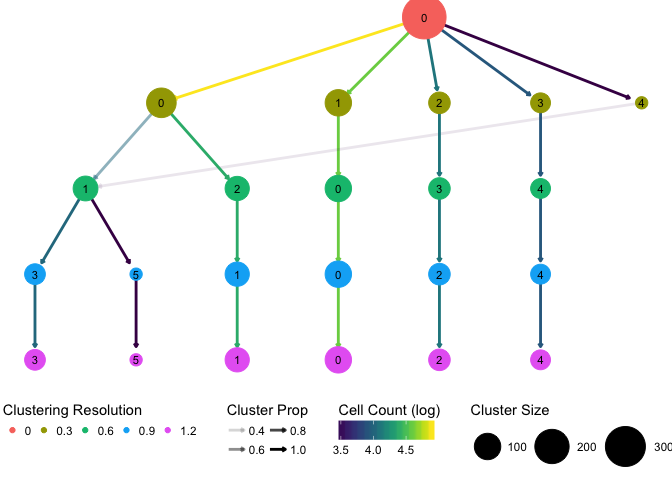

Building a clustering tree
For my PhD I am working on methods for analysing single-cell RNA-sequencing (scRNA-seq) data which measure the expression of genes in individual cells. One of the most common analyses done on this type of data is to cluster the cells, often in an attempt to find out what cell types are present in a sample.
In a recent seminar I showed some images of what I am calling a “clustering tree” (you can see the slides here if you are interested). This is a visualisation I came up with to show the relationship between clusterings as the number of clusters is increased. A few people asked how I had made it so here is a short example.
Setup
First we need to load the libraries we are going to use:
# Simulation
library(splatter)
# Clustering
library(Seurat) # Installed from https://github.com/satijalab/seurat
# Graphs
library(igraph)
# Plotting
library(ggraph)
library(viridis)
# Data manipulation
library(tidyverse)For this example I am going to simulate some scRNA-seq data with eight different groups with different numbers of cells using Splatter.
sim <- splatSimulateGroups(groupCells = c(100, 80, 60, 50, 30, 20, 20, 15),
seed = 10, verbose = FALSE)Let’s take a quick look at this to see if it is anything like we would expect:
plotTSNE(sim, colour_by = "Group")
Here we can see the different groups, so there should be something for our clustering analysis to find.
The clustering pacakge we are going to use is Seurat which uses it’s own object to store the data. Here is a small function I have written to convert from the SCESet object produced by Splatter to the Seurat object required by Seurat.
SCESetToSeurat <- function(sce) {
if (!is(sce,'SCESet')) {
stop("sce must be an SCESet object")
}
counts <- scater::counts(sce)
if (is.null(counts)) {
stop("sce must contain counts to convert to Seurat")
}
seurat <- new("seurat",
raw.data = counts,
is.expr = sce@lowerDetectionLimit,
data.info = Biobase::pData(sce),
cell.names = Biobase::sampleNames(sce))
return(seurat)
}Now to convert the dataset.
seurat <- SCESetToSeurat(sim)Clustering
We now have a dataset in the format required by Seurat. Before we do any clustering we need to run through some setup steps. I’m not going to explain what they are doing here, if you want to now the details refer to the Seurat tutorials.
seurat <- Setup(seurat, project = "Example", meta.data = seurat@data.info)
seurat <- MeanVarPlot(seurat, fxn.x = expMean, fxn.y = logVarDivMean,
x.low.cutoff = 0.1, x.high.cutoff = 3,
y.cutoff = 0.5, do.contour = FALSE)
seurat <- PCA(seurat, pc.genes = seurat@var.genes, do.print = FALSE)Now we can do the clustering. The parameter we are interested in is the resolution parameter which controls how many clusters Seurat returns. I start by setting resolution = 0. This will create a cluster containing all cells that will serve as the root of our tree. We also ask Seurat to store some of the intermediate calculations so we don’t have to do them again when we cluster with different resolutions:
seurat <- FindClusters(seurat, pc.use = 1:20, resolution = 0, algorithm = 3,
print.output = FALSE, save.SNN = TRUE)We can now loop over a range of resolutions that we are interested in. I have only tried a few values here but if this was a real dataset you might want to try some more.
for (res in c(0.3, 0.6, 0.9, 1.2)) {
seurat <- FindClusters(seurat, resolution = res, algorithm = 3,
print.output = FALSE)
}Get results
Seurat stores the cluster labels in the data.info slot in columns starting with res.. This is the only part we are interested in so let’s extract just those columns.
clusterings <- seurat@data.info %>% select(contains("res."))
head(clusterings)
## res.0 res.0.3 res.0.6 res.0.9 res.1.2
## Cell1 0 1 0 0 0
## Cell2 0 1 0 0 0
## Cell3 0 1 0 0 0
## Cell4 0 1 0 0 0
## Cell5 0 1 0 0 0
## Cell6 0 1 0 0 0We now know which cluster each cell was assigned to at each resolution but to build the tree we need some more information. This next function looks at two neighbouring resolutions and works out how many cells moved from a cluster in the lower resolution to each cluster in the higher resolution. These transitions are going to form the edges of our tree.
getEdges <- function(clusterings) {
# Loop over the different resolutions
transitions <- lapply(1:(ncol(clusterings) - 1), function(i) {
# Extract two neighbouring clusterings
from.res <- sort(colnames(clusterings))[i]
to.res <- sort(colnames(clusterings))[i + 1]
# Get the cluster names
from.clusters <- sort(unique(clusterings[, from.res]))
to.clusters <- sort(unique(clusterings[, to.res]))
# Get all possible combinations
trans.df <- expand.grid(FromClust = from.clusters,
ToClust = to.clusters)
# Loop over the possible transitions
trans <- apply(trans.df, 1, function(x) {
from.clust <- x[1]
to.clust <- x[2]
# Find the cells from those clusters
is.from <- clusterings[, from.res] == from.clust
is.to <- clusterings[, to.res] == to.clust
# Count them up
trans.count <- sum(is.from & is.to)
# Get the sizes of the two clusters
from.size <- sum(is.from)
to.size <- sum(is.to)
# Get the proportions of cells moving along this edge
trans.prop.from <- trans.count / from.size
trans.prop.to <- trans.count / to.size
return(c(trans.count, trans.prop.from, trans.prop.to))
})
# Tidy up the results
trans.df$FromRes <- as.numeric(gsub("res.", "", from.res))
trans.df$ToRes <- as.numeric(gsub("res.", "", to.res))
trans.df$TransCount <- trans[1, ]
trans.df$TransPropFrom <- trans[2, ]
trans.df$TransPropTo <- trans[3, ]
return(trans.df)
})
# Bind the results from the different resolutions together
transitions <- do.call("rbind", transitions)
# Tidy everything up
levs <- sort(as.numeric(levels(transitions$ToClust)))
transitions <- transitions %>%
mutate(FromClust = factor(FromClust,
levels = levs)) %>%
mutate(ToClust = factor(ToClust, levels = levs))
return(transitions)
}
edges <- getEdges(clusterings)
head(edges)
## FromClust ToClust FromRes ToRes TransCount TransPropFrom TransPropTo
## 1 0 0 0.0 0.3 135 0.3600000 1
## 2 0 1 0.0 0.3 100 0.2666667 1
## 3 0 2 0.0 0.3 60 0.1600000 1
## 4 0 3 0.0 0.3 50 0.1333333 1
## 5 0 4 0.0 0.3 30 0.0800000 1
## 6 0 0 0.3 0.6 0 0.0000000 0Some of these columns are pretty obvious but the last three could do with an explanation. TransCount is the number of cells that move along this edge. TransPropFrom is the proportion of the cells in the lower resolution cluster that have made this transition and TransPropTo is the proportion of cells in the higher resolution cluster that came from this edge.
Getting the information about the nodes of the tree is easier as these just represent the clusters. This function summarises the cluster information and converts it to long format.
getNodes <- function(clusterings) {
nodes <- clusterings %>%
gather(key = Res, value = Cluster) %>%
group_by(Res, Cluster) %>%
summarise(Size = n()) %>%
ungroup() %>%
mutate(Res = stringr::str_replace(Res, "res.", "")) %>%
mutate(Res = as.numeric(Res), Cluster = as.numeric(Cluster)) %>%
mutate(Node = paste0("R", Res, "C", Cluster)) %>%
select(Node, everything())
}
nodes <- getNodes(clusterings)
head(nodes)
## # A tibble: 6 x 4
## Node Res Cluster Size
## <chr> <dbl> <dbl> <int>
## 1 R0C0 0.0 0 375
## 2 R0.3C0 0.3 0 135
## 3 R0.3C1 0.3 1 100
## 4 R0.3C2 0.3 2 60
## 5 R0.3C3 0.3 3 50
## 6 R0.3C4 0.3 4 30Each node needs a unique ID which I have made by combining the resolution and cluster number. We also record the number of cells in each cluster.
Now we can build the graph we will use as the starting point for our plot. Some of the possible edges between clusters will have no cells travelling along them so we filter them out. We also remove edges that correspond to a small proportion (< 2%) of cells in the higher resolution cluster.
graph <- edges %>%
# Remove edges without any cell...
filter(TransCount > 0) %>%
# ...or making up only a small proportion of the new cluster
filter(TransPropTo > 0.02) %>%
# Rename the nodes
mutate(FromNode = paste0("R", FromRes, "C", FromClust)) %>%
mutate(ToNode = paste0("R", ToRes, "C", ToClust)) %>%
# Reorder columns
select(FromNode, ToNode, everything()) %>%
# Build a graph using igraph
graph_from_data_frame(vertices = nodes)
print(graph)
## IGRAPH b1b93c3 DN-- 23 23 --
## + attr: name (v/c), Res (v/n), Cluster (v/n), Size (v/n),
## | FromClust (e/c), ToClust (e/c), FromRes (e/n), ToRes (e/n),
## | TransCount (e/n), TransPropFrom (e/n), TransPropTo (e/n)
## + edges from b1b93c3 (vertex names):
## [1] R0C0 ->R0.3C0 R0C0 ->R0.3C1 R0C0 ->R0.3C2 R0C0 ->R0.3C3
## [5] R0C0 ->R0.3C4 R0.3C1->R0.6C0 R0.3C0->R0.6C1 R0.3C4->R0.6C1
## [9] R0.3C0->R0.6C2 R0.3C2->R0.6C3 R0.3C3->R0.6C4 R0.6C0->R0.9C0
## [13] R0.6C2->R0.9C1 R0.6C3->R0.9C2 R0.6C1->R0.9C3 R0.6C4->R0.9C4
## [17] R0.6C1->R0.9C5 R0.9C0->R1.2C0 R0.9C1->R1.2C1 R0.9C2->R1.2C2
## [21] R0.9C3->R1.2C3 R0.9C4->R1.2C4 R0.9C5->R1.2C5Plot the tree
The last step is to pass our graph to the ggraph library for plotting.
# Plot our graph using the `tree` layout
ggraph(graph, layout = "tree") +
# Plot the edges, colour is the number of cells and transparency is the
# proportion contribution to the new cluster
geom_edge_link(arrow = arrow(length = unit(1, 'mm')),
end_cap = circle(3.5, "mm"), edge_width = 1,
aes(colour = log(TransCount), alpha = TransPropTo)) +
# Plot the nodes, size is the number of cells
geom_node_point(aes(colour = factor(Res),
size = Size)) +
geom_node_text(aes(label = Cluster), size = 3) +
# Adjust the scales
scale_size(range = c(4, 15)) +
scale_edge_colour_gradientn(colours = viridis(100)) +
# Add legend labels
guides(size = guide_legend(title = "Cluster Size", title.position = "top"),
colour = guide_legend(title = "Clustering Resolution",
title.position = "top"),
edge_colour = guide_edge_colorbar(title = "Cell Count (log)",
title.position = "top"),
edge_alpha = guide_legend(title = "Cluster Prop",
title.position = "top", nrow = 2)) +
# Remove the axes as they don't really mean anything
theme_void() +
theme(legend.position = "bottom")
And here is the result! We can see that see that Seurat finds three of the clusters easily and that these don’t change as the resolution increases. A fourth group contains most of the cells and is sub-divided as we increase resolution. Interestingly at the lowest resolution there is a small cluster which is then absorbed into one of the other branches.
This tree is cleaner and has less branches than what we would be likely to see with a real dataset but the process to create it would be the same. I have used Seurat as the clustering method in this example but it should be easy to adapt the process to any other method that allows you to adjust the number of clusters. I have found this visualisation useful in my analysis particularly for looking at which clusters are very distinct and the relationships between different clusters and clusterings.
Good luck creating your own clustering trees!
Session information
devtools::session_info()
## Session info -------------------------------------------------------------
## setting value
## version R version 3.4.1 (2017-06-30)
## system x86_64, darwin15.6.0
## ui RStudio (1.0.143)
## language (EN)
## collate en_AU.UTF-8
## tz Australia/Melbourne
## date 2017-07-19
## Packages -----------------------------------------------------------------
## package * version date source
## AnnotationDbi 1.38.1 2017-06-01 Bioconductor
## ape 4.1 2017-02-14 cran (@4.1)
## assertthat 0.2.0 2017-04-11 CRAN (R 3.4.0)
## backports 1.1.0 2017-05-22 CRAN (R 3.4.0)
## base * 3.4.1 2017-07-07 local
## beeswarm 0.2.3 2016-04-25 CRAN (R 3.4.0)
## bindr 0.1 2016-11-13 CRAN (R 3.4.0)
## bindrcpp * 0.2 2017-06-17 CRAN (R 3.4.0)
## Biobase * 2.36.2 2017-05-04 Bioconductor
## BiocGenerics * 0.22.0 2017-04-25 Bioconductor
## BiocParallel 1.10.1 2017-05-03 Bioconductor
## biomaRt 2.32.1 2017-06-09 Bioconductor
## bit 1.1-12 2014-04-09 CRAN (R 3.4.0)
## bit64 0.9-7 2017-05-08 CRAN (R 3.4.0)
## bitops 1.0-6 2013-08-17 CRAN (R 3.4.0)
## blob 1.1.0 2017-06-17 CRAN (R 3.4.0)
## broom 0.4.2 2017-02-13 CRAN (R 3.4.0)
## car 2.1-5 2017-07-04 cran (@2.1-5)
## caret 6.0-76 2017-04-18 cran (@6.0-76)
## caTools 1.17.1 2014-09-10 cran (@1.17.1)
## cellranger 1.1.0 2016-07-27 CRAN (R 3.4.0)
## checkmate 1.8.3 2017-07-03 CRAN (R 3.4.1)
## class 7.3-14 2015-08-30 CRAN (R 3.4.1)
## cluster 2.0.6 2017-03-10 CRAN (R 3.4.1)
## codetools 0.2-15 2016-10-05 CRAN (R 3.4.1)
## colorspace 1.3-2 2016-12-14 CRAN (R 3.4.0)
## compiler 3.4.1 2017-07-07 local
## cowplot * 0.7.0 2016-10-28 cran (@0.7.0)
## data.table 1.10.4 2017-02-01 CRAN (R 3.4.0)
## datasets * 3.4.1 2017-07-07 local
## DBI 0.7 2017-06-18 CRAN (R 3.4.0)
## DEoptimR 1.0-8 2016-11-19 cran (@1.0-8)
## devtools 1.13.2 2017-06-02 CRAN (R 3.4.0)
## digest 0.6.12 2017-01-27 CRAN (R 3.4.0)
## diptest 0.75-7 2016-12-05 cran (@0.75-7)
## dplyr * 0.7.1 2017-06-22 CRAN (R 3.4.1)
## edgeR 3.18.1 2017-05-06 Bioconductor
## evaluate 0.10.1 2017-06-24 CRAN (R 3.4.1)
## fastICA 1.2-1 2017-06-12 cran (@1.2-1)
## flexmix 2.3-14 2017-04-28 cran (@2.3-14)
## FNN 1.1 2013-07-31 cran (@1.1)
## forcats 0.2.0 2017-01-23 CRAN (R 3.4.0)
## foreach 1.4.3 2015-10-13 cran (@1.4.3)
## foreign 0.8-69 2017-06-22 CRAN (R 3.4.1)
## fpc 2.1-10 2015-08-14 cran (@2.1-10)
## gdata 2.18.0 2017-06-06 cran (@2.18.0)
## ggbeeswarm 0.5.3 2016-12-01 CRAN (R 3.4.0)
## ggforce 0.1.1 2016-11-28 CRAN (R 3.4.0)
## ggplot2 * 2.2.1 2016-12-30 CRAN (R 3.4.0)
## ggraph * 1.0.0 2017-02-24 CRAN (R 3.4.0)
## ggrepel 0.6.5 2016-11-24 CRAN (R 3.4.0)
## glue 1.1.1 2017-06-21 CRAN (R 3.4.1)
## gplots 3.0.1 2016-03-30 cran (@3.0.1)
## graphics * 3.4.1 2017-07-07 local
## grDevices * 3.4.1 2017-07-07 local
## grid 3.4.1 2017-07-07 local
## gridExtra 2.2.1 2016-02-29 CRAN (R 3.4.0)
## gtable 0.2.0 2016-02-26 CRAN (R 3.4.0)
## gtools 3.5.0 2015-05-29 cran (@3.5.0)
## haven 1.1.0 2017-07-09 CRAN (R 3.4.1)
## hms 0.3 2016-11-22 CRAN (R 3.4.0)
## htmltools 0.3.6 2017-04-28 CRAN (R 3.4.0)
## httpuv 1.3.5 2017-07-04 CRAN (R 3.4.1)
## httr 1.2.1 2016-07-03 CRAN (R 3.4.0)
## igraph * 1.1.1 2017-07-16 CRAN (R 3.4.1)
## IRanges 2.10.2 2017-05-25 Bioconductor
## irlba 2.2.1 2017-05-17 cran (@2.2.1)
## iterators 1.0.8 2015-10-13 cran (@1.0.8)
## jsonlite 1.5 2017-06-01 CRAN (R 3.4.0)
## kernlab 0.9-25 2016-10-03 cran (@0.9-25)
## KernSmooth 2.23-15 2015-06-29 CRAN (R 3.4.1)
## knitr 1.16 2017-05-18 CRAN (R 3.4.1)
## labeling 0.3 2014-08-23 CRAN (R 3.4.0)
## lars 1.2 2013-04-24 cran (@1.2)
## lattice 0.20-35 2017-03-25 CRAN (R 3.4.1)
## lazyeval 0.2.0 2016-06-12 CRAN (R 3.4.0)
## limma 3.32.3 2017-07-16 Bioconductor
## lme4 1.1-13 2017-04-19 cran (@1.1-13)
## locfit 1.5-9.1 2013-04-20 CRAN (R 3.4.0)
## lubridate 1.6.0 2016-09-13 CRAN (R 3.4.0)
## magrittr 1.5 2014-11-22 CRAN (R 3.4.0)
## MASS 7.3-47 2017-02-26 CRAN (R 3.4.1)
## Matrix 1.2-10 2017-05-03 CRAN (R 3.4.1)
## MatrixModels 0.4-1 2015-08-22 cran (@0.4-1)
## matrixStats 0.52.2 2017-04-14 CRAN (R 3.4.0)
## mclust 5.3 2017-05-21 cran (@5.3)
## memoise 1.1.0 2017-04-21 CRAN (R 3.4.0)
## methods * 3.4.1 2017-07-07 local
## mgcv 1.8-17 2017-02-08 CRAN (R 3.4.1)
## mime 0.5 2016-07-07 CRAN (R 3.4.0)
## minqa 1.2.4 2014-10-09 cran (@1.2.4)
## mixtools 1.1.0 2017-03-10 cran (@1.1.0)
## mnormt 1.5-5 2016-10-15 CRAN (R 3.4.0)
## ModelMetrics 1.1.0 2016-08-26 cran (@1.1.0)
## modelr 0.1.0 2016-08-31 CRAN (R 3.4.0)
## modeltools 0.2-21 2013-09-02 cran (@0.2-21)
## munsell 0.4.3 2016-02-13 CRAN (R 3.4.0)
## mvtnorm 1.0-6 2017-03-02 cran (@1.0-6)
## nlme 3.1-131 2017-02-06 CRAN (R 3.4.1)
## nloptr 1.0.4 2014-08-04 cran (@1.0.4)
## nnet 7.3-12 2016-02-02 CRAN (R 3.4.1)
## numDeriv 2016.8-1 2016-08-27 cran (@2016.8-)
## parallel * 3.4.1 2017-07-07 local
## pbapply 1.3-3 2017-07-04 cran (@1.3-3)
## pbkrtest 0.4-7 2017-03-15 cran (@0.4-7)
## pkgconfig 2.0.1 2017-03-21 CRAN (R 3.4.0)
## plyr 1.8.4 2016-06-08 CRAN (R 3.4.0)
## prabclus 2.2-6 2015-01-14 cran (@2.2-6)
## psych 1.7.5 2017-05-03 CRAN (R 3.4.1)
## purrr * 0.2.2.2 2017-05-11 CRAN (R 3.4.0)
## quantreg 5.33 2017-04-18 cran (@5.33)
## R6 2.2.2 2017-06-17 CRAN (R 3.4.0)
## ranger 0.8.0 2017-06-20 cran (@0.8.0)
## RColorBrewer 1.1-2 2014-12-07 CRAN (R 3.4.0)
## Rcpp 0.12.12 2017-07-15 CRAN (R 3.4.1)
## RCurl 1.95-4.8 2016-03-01 CRAN (R 3.4.0)
## readr * 1.1.1 2017-05-16 CRAN (R 3.4.0)
## readxl 1.0.0 2017-04-18 CRAN (R 3.4.0)
## reshape2 1.4.2 2016-10-22 CRAN (R 3.4.0)
## rhdf5 2.20.0 2017-04-25 Bioconductor
## rjson 0.2.15 2014-11-03 CRAN (R 3.4.0)
## rlang 0.1.1 2017-05-18 CRAN (R 3.4.0)
## rmarkdown 1.6 2017-06-15 CRAN (R 3.4.1)
## robustbase 0.92-7 2016-12-09 cran (@0.92-7)
## ROCR 1.0-7 2015-03-26 cran (@1.0-7)
## rprojroot 1.2 2017-01-16 CRAN (R 3.4.0)
## RSQLite 2.0 2017-06-19 CRAN (R 3.4.1)
## Rtsne 0.13 2017-04-14 cran (@0.13)
## rvest 0.3.2 2016-06-17 CRAN (R 3.4.0)
## S4Vectors 0.14.3 2017-06-03 Bioconductor
## scales 0.4.1 2016-11-09 CRAN (R 3.4.0)
## scater * 1.4.0 2017-04-25 Bioconductor
## segmented 0.5-2.1 2017-06-14 cran (@0.5-2.1)
## Seurat * 1.4.0.16 2017-07-19 Github (satijalab/seurat@3bd092a)
## shiny 1.0.3 2017-04-26 CRAN (R 3.4.0)
## shinydashboard 0.6.1 2017-06-14 CRAN (R 3.4.0)
## sn 1.5-0 2017-02-10 cran (@1.5-0)
## SparseM 1.77 2017-04-23 cran (@1.77)
## splatter * 1.0.3 2017-05-27 Bioconductor
## splines 3.4.1 2017-07-07 local
## stats * 3.4.1 2017-07-07 local
## stats4 3.4.1 2017-07-07 local
## stringi 1.1.5 2017-04-07 CRAN (R 3.4.0)
## stringr 1.2.0 2017-02-18 CRAN (R 3.4.0)
## survival 2.41-3 2017-04-04 CRAN (R 3.4.1)
## tclust 1.2-7 2017-06-30 cran (@1.2-7)
## tibble * 1.3.3 2017-05-28 CRAN (R 3.4.0)
## tidyr * 0.6.3 2017-05-15 CRAN (R 3.4.0)
## tidyverse * 1.1.1 2017-01-27 CRAN (R 3.4.0)
## tools 3.4.1 2017-07-07 local
## trimcluster 0.1-2 2012-10-29 cran (@0.1-2)
## tsne 0.1-3 2016-07-15 cran (@0.1-3)
## tweenr 0.1.5 2016-10-10 CRAN (R 3.4.0)
## tximport 1.4.0 2017-04-25 Bioconductor
## udunits2 0.13 2016-11-17 CRAN (R 3.4.0)
## units 0.4-5 2017-06-15 CRAN (R 3.4.0)
## utils * 3.4.1 2017-07-07 local
## VGAM 1.0-3 2017-01-11 cran (@1.0-3)
## vipor 0.4.5 2017-03-22 CRAN (R 3.4.0)
## viridis * 0.4.0 2017-03-27 CRAN (R 3.4.0)
## viridisLite * 0.2.0 2017-03-24 CRAN (R 3.4.0)
## withr 1.0.2 2016-06-20 CRAN (R 3.4.0)
## XML 3.98-1.9 2017-06-19 CRAN (R 3.4.1)
## xml2 1.1.1 2017-01-24 CRAN (R 3.4.0)
## xtable 1.8-2 2016-02-05 CRAN (R 3.4.0)
## yaml 2.1.14 2016-11-12 CRAN (R 3.4.0)
## zlibbioc 1.22.0 2017-04-25 Bioconductor